@TransphobicLss, or as we will call it Lss, is an account made by Dan to expose the moderators on TransphobicLs. Despite its seemingly good intentions, the creator and past moderators of the account have proven to be vindictive and have their own skeletons in the closet.
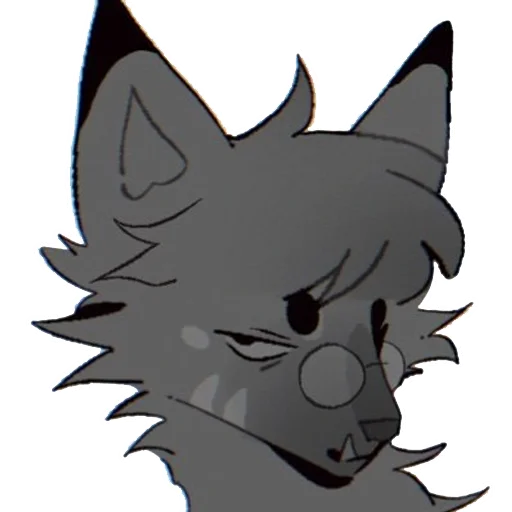The account originated in November of 2022 amidst the controversy of a zoophile being on the mod team of TransphobicLs. Claiming to be there to document and uplift victims’ voices, it was revealed that the true purpose of the account was to circumvent the truce between Dan and Zrcalo.
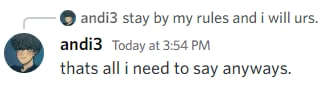This account and the drama surrounding it spiraled into a pillar of lies, deception, abuse, and child endangerment. Multiple moderators of Lss were manipulated and have since denounced the account and the people behind it, calling it a vengeful plot that cannot be trusted due to constant "bold-faced lies" for the sake of "the message".
The account was created on November 3, 2023, by Dan (ü¶ê mod), who shortly after recruited Oliver as the web (üï∏Ô∏è) mod of the account. The day after, JesterKitty (who was 16 years old) was recruited as the tennis (üéæ) mod, and the day after that, Paul was brought on board as the virus (ü¶†) mod.
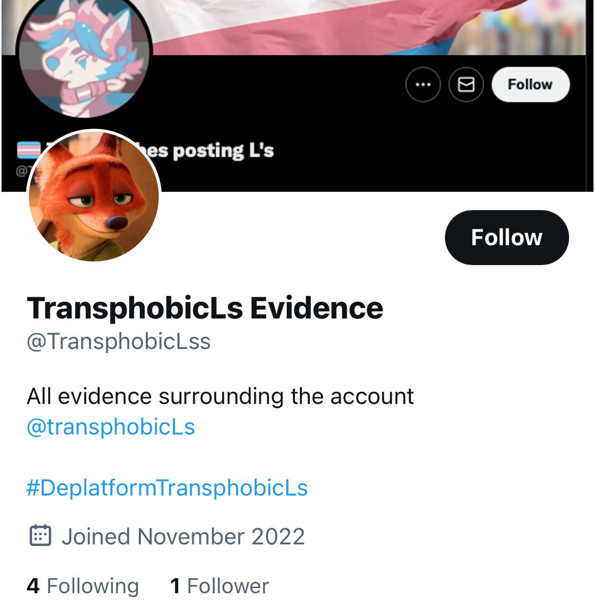
This made up the original moderation staff of the Lss account.

Dan knew Oliver was a pedophile before inviting him to the account.


 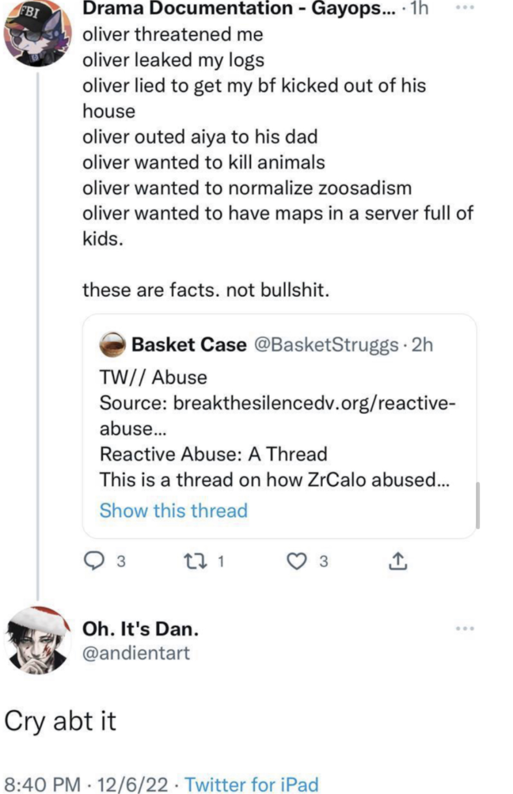
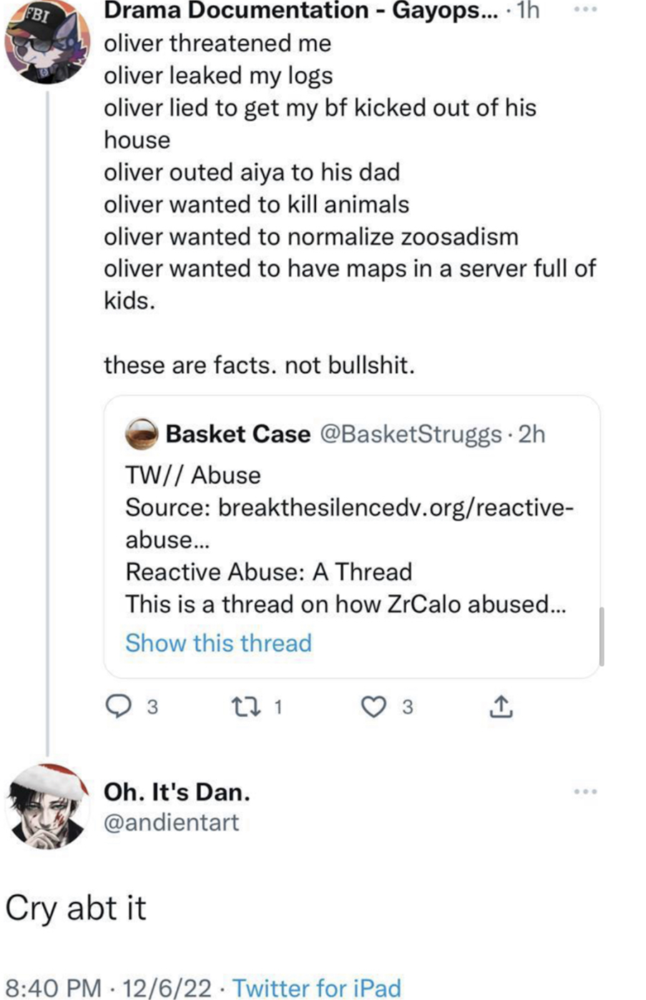
Dan initiated a romantic relationship with Oliver, knowing he was a pedophile.

The Kiwi Farms is an antisemitic, transphobic hate site, connected to multiple shootings, banned in several nations, and it was shut down for “an imminent threat to human life” before moving to the dark web.
Pless, Margaret (July 19, 2016). "Kiwi Farms, the Web's Biggest Community of Stalkers". Intelligencer. New York Magazine. Archived from the original on May 11, 2019.
Rosenberg, Scott (August 25, 2022). "Campaign pushes Cloudflare to drop trans hate site". Axios. Archived from the original on August 25, 2022.
Lss has repeatedly used Kiwi Farms, and has even defended and promoted its use.
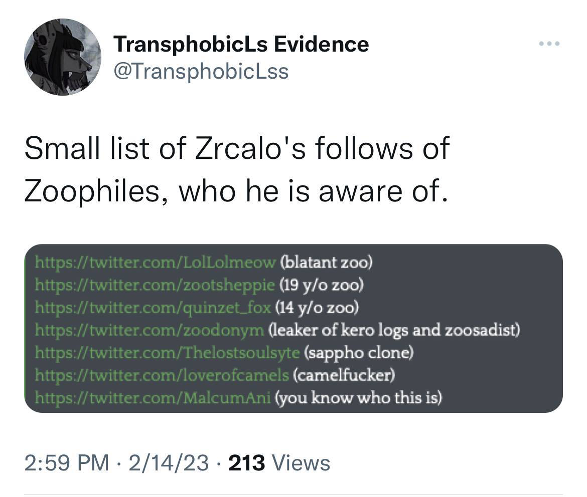 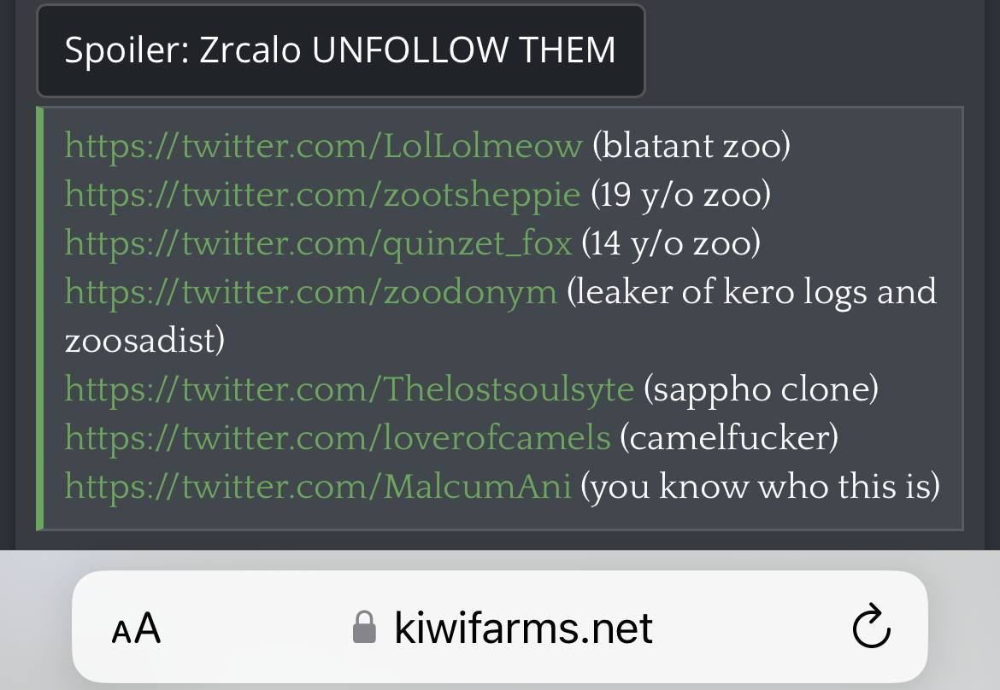When called out, they responded with a snarky and sarcastic response, doubling down, and promoting it as a “free and accessible” source of “information”.

Lss’ promotion of Kiwi Farms even extends to spreading conspiracies about one of the suicides connected to the Farms. Kiwi actively spreads that Near faked their death, and has dubbed it “byuuicide”. Spreading it as “what really happened to Near” is disgusting.
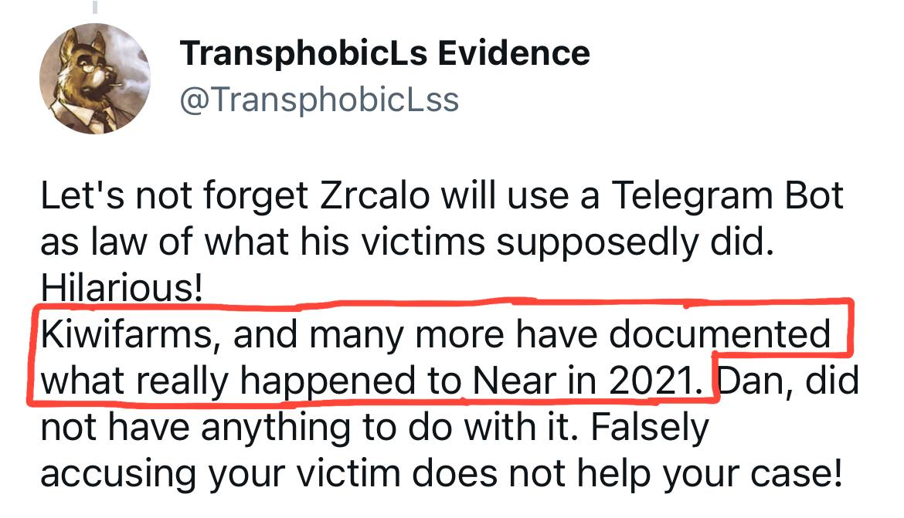Arch is in the server, says it’s “got the structure for something” and says “hopefully the draw-in will be notable enough”. Shows Arch is on board with the plans.


Minors in the server, minors are mods/admins, Minors are talking about saving pedophiles’ dick pics for “evidence”.


 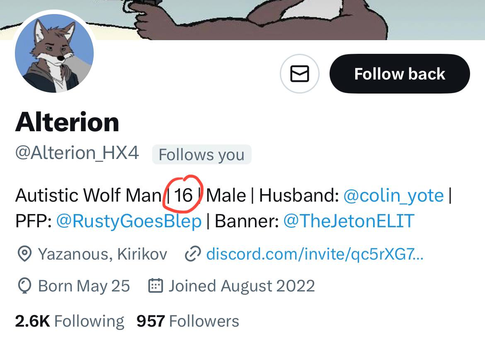
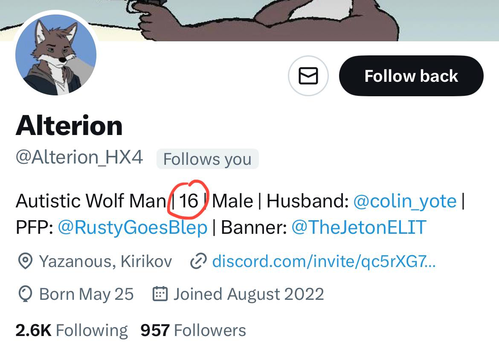
The discord server is essentially free for all with very little moderation to sensitive content. This wouldn’t necessarily be an issue if he didn’t allow minors, but he does. In fact most of the server consists of minors.
An admitted and self-proclaimed child predator, pedophile, and zoosadist who derives sexual pleasure from the pain of children and animals.


 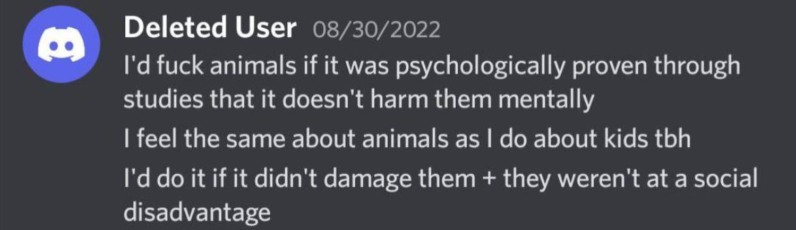
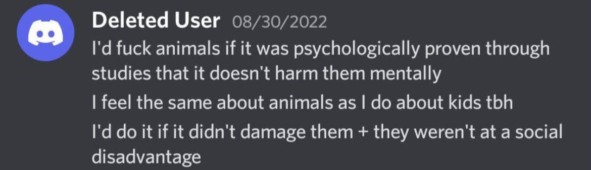
Danesia is a serial abuser who will defend predators at any cost if it serves her agenda.
Stellar is a self-admitted pedophile and zoophile who has been defended and promoted by Dan and Lss, despite their claims of calling out such individuals.
Stellar was actively involved in the Lss community, providing “evidence” and participating in discussions, even though their own actions contradict the account’s stated mission.


Stellar openly admitted to having inappropriate thoughts and desires toward minors, yet was protected by Dan to maintain the narrative against other targets.


Stellar also confessed to engaging in and fantasizing about zoophilic acts, which Lss ignored or downplayed to preserve their alliance.


Dan defended Stellar publicly, claiming their actions were “misunderstood” and prioritizing their usefulness to Lss over the safety of others.
This hypocrisy undermines Lss’s credibility and shows their true motive: personal vendettas over genuine advocacy.
Mia Taylor, also known as various aliases, is another figure associated with Lss, implicated in manipulation and harassment while posing as a victim or ally.
Mia Taylor served as a moderator or key supporter on Lss, often spreading misinformation and targeting individuals in line with Dan’s agenda.


Mia Taylor manipulated narratives to portray victims as aggressors, working closely with Dan to maintain control over the Lss narrative.


Mia was directly involved in harassment campaigns against targets like Zrcalo and Near, using Lss’s platform to dox and intimidate them.


Mia promoted and utilized Kiwi Farms as a source, further aligning with Lss’s controversial and harmful practices.
Mia’s actions, like those of Dan and others, reveal a pattern of abuse and deception that contradicts Lss’s stated mission.